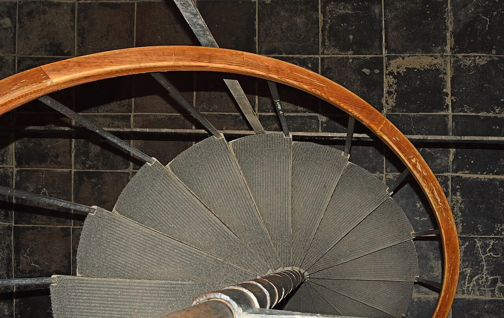
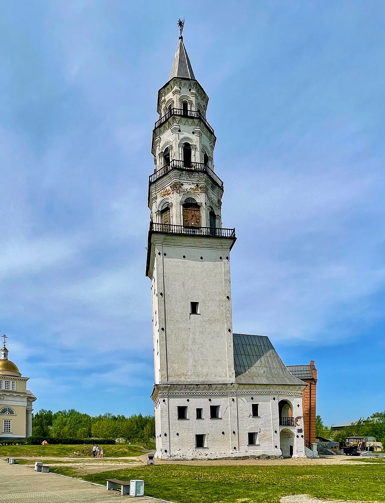
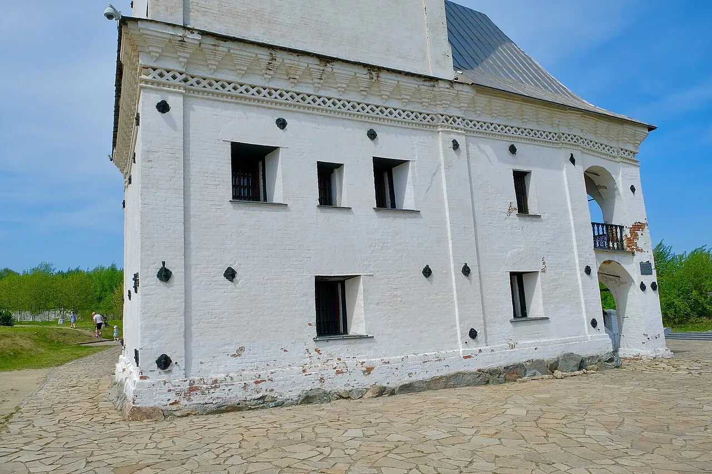
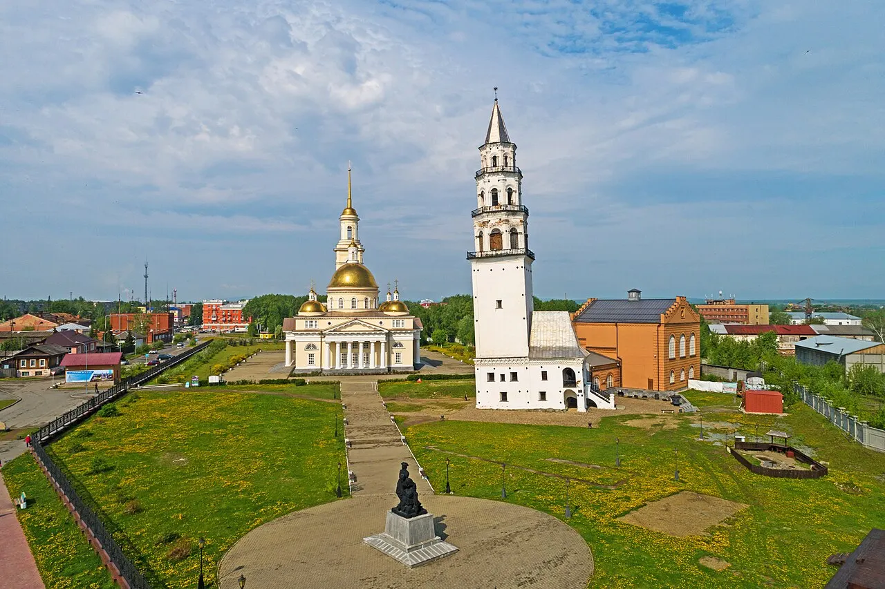
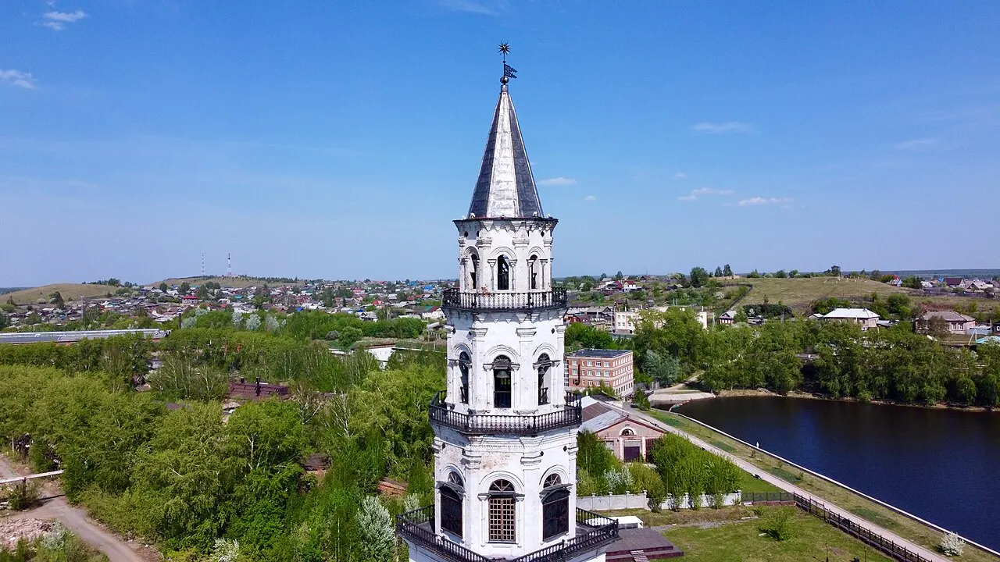
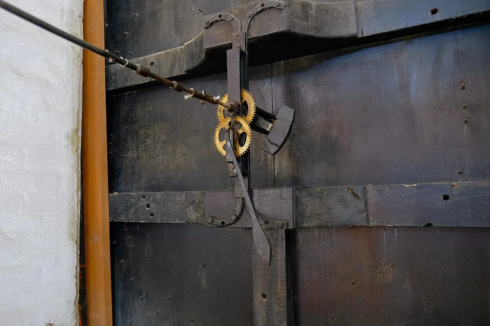
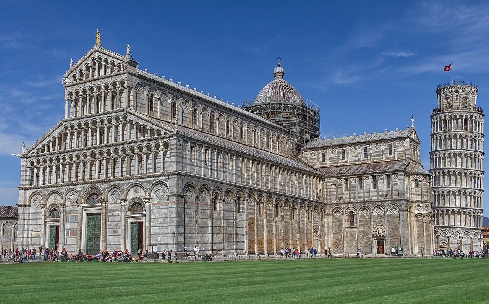

Деталь · железо
Что видно: человеческий путь внутри вертикали сжимается в крутую винтовую лестницу.
Ludvig14, CC BY-SA 4.0.

5 января · Музей русской архитектуры
Сравни тяжёлый низ и шпиль: они словно принадлежат разным вертикалям. Пройди взглядом 57,5 метра снизу вверх и найди место, где меняется ось.
Вводный фильм · 29 секунд
Фильм ставит вопрос; интерактив ниже даст проверить ответ самому.
Документальные фотографии, синтезированный голос Дмитрия. Изображения не дорисованы и не выданы за историческую реконструкцию.
Башня отклонена почти на два метра. Но найди её верх: шпиль снова смотрит почти вертикально. Значит, ось сооружения не идёт одной прямой. Где именно меняется её направление — в тяжёлом основании, в восьмигранных ярусах или у самого шпиля? Проведи отвес по четырём зонам на странице. Сначала увидь измеряемую форму, затем проверь версию о том, как она возникла.
Выбери глубину
Короткий маршрут: 1/3 · проведи отвес
Главное действие
Перемещай ползунок по четырём зонам. Маркер находит участок оси, а красный отрезок показывает его местное направление: сильнее наклонённый низ постепенно сменяется почти вертикальным верхом.
Квадратное основание отклонено сильнее; выше направление оси меняется, а верхние ярусы и шпиль ближе к вертикали. Это наблюдаемая форма. Просадка основания и последующая корректировка кладки — объясняющая версия, а не зафиксированное действие строителей.
Четыре масштаба
Каждый кадр отвечает на свой вопрос. Подпись не закрывает фотографию.

Что видно: человеческий путь внутри вертикали сжимается в крутую винтовую лестницу.
Ludvig14, CC BY-SA 4.0.

Что видно: квадратное основание несёт башню и отклонено заметнее верхних ярусов.
Вячеслав Бухаров, CC BY-SA 4.0.

Что видно: башня и нынешний собор образуют две вертикали. Собор восстановили к 300-летию Невьянска, поэтому современное соседство нельзя принимать за целиком сохранившийся ансамбль XVIII века.
Ludvig14, CC BY-SA 4.0.

Что видно: высота делает башню ориентиром, который читается дальше заводской площади.
Вячеслав Бухаров, CC BY-SA 4.0.
Люди и наблюдения
Башню возвели в 1720-е годы по приказу Акинфия Демидова; музейная публикация М. В. Моревой приводит диапазон 1721–1725. Имя архитектора-строителя документы выпуска не называют — неизвестное здесь важнее удобной атрибуции.
Каменная башня появилась рядом с заводом и прудом по приказу Акинфия Демидова. Её точный первоначальный набор функций остаётся предметом версий.
Наблюдения зафиксировали отклонение верха на 1800 мм к западу. Это измерение положения, а не доказательство причины наклона.
Пять циклов наблюдений не выявили прогрессирующего наклона. Это позволяет отличать наклонную башню от продолжающей падать.
Невьянская башня Демидовых имеет статус объекта культурного наследия федерального значения. Нынешнее окружение относится к разным эпохам.

Часы и город
Официальная карточка памятника описывает английские куранты 1730 года и музыкальный бой с четвертями часа. Это устройство позволяло башне работать не только силуэтом, но и звуком.
Поэтому мы предлагаем смотреть на неё как на городской ориентир времени. Это кураторское прочтение подтверждённого механизма, а не утверждение о единственном первоначальном назначении всей башни.
Проверка факта и версии
Факт: ось башни искривлена: нижняя часть отклонена сильнее, верхняя ближе к вертикали. Высота — 57,5 м; заказ связан с Акинфием Демидовым; часы и акустическая комната существуют.
Версия по конструкции: основание могло дать осадку во время строительства, после чего направление верхней кладки корректировали. Прямого строительного документа об этом в источниках выпуска нет.
Легенда: наклон задуман как жест в сторону Тулы; в подвалах чеканили тайные деньги и затопили свидетелей. Эти рассказы не подаются как доказанные события.
Неизвестно: имя архитектора и точная дата начала работ. Публичные источники называют середину 1720-х или диапазон 1721–1725.
Это разные опубликованные сведения. Мы не называем их одним замером и не объясняем расхождение без методики измерений.
Россия и мир

Сходство наклона не доказывает заимствования. Сравнение показывает разные принципы: Невьянск — вертикаль горнозаводского города; Пиза — отдельная колокольня средневекового соборного комплекса.
На месте
Отойди к площади так, чтобы рядом с башней оказался вертикальный край — фонарный столб или край здания. Сначала сравни низ, затем середину и шпиль. После открытия проверь актуальные часы экскурсий на официальной карточке Культура.РФ.
Игра · факт или легенда
Четыре утверждения. Сначала выбери категорию сам — объяснение появится после ответа.
Утверждение 1 из 4
Выбери: это установлено источниками или живёт как легенда?
Проверка понимания
Наблюдение: нижняя часть отклонена сильнее, а верхние ярусы ближе к вертикали. Объяснение корректировкой кладки — наиболее распространённая версия, но не прямое свидетельство строителей.
Измерения, видимое изменение оси, часы и устройство ярусов — доказуемы. Намеренный поклон Туле и тайная чеканка остаются легендами.
Деталь показывает материал, здание — конструкцию, ансамбль — соседство функций, город — роль вертикали в ландшафте.
Источники и права
Фотографии Невьянска: Вячеслав Бухаров и Ludvig14, Wikimedia Commons, CC BY-SA 4.0. Пиза: Ray in Manila, CC BY 2.0. Все кадры только кадрированы и переведены в WebP; генеративная дорисовка не применялась.
Январь · архитектура
Куда дальше
6 января — Георгиевский собор в Юрьеве-Польском: после обрушения резные камни собрали заново, но прежний порядок рельефов потеряли.
6 января · Георгиевский соборСтраница готовится; пока открыть музей архитектуры →